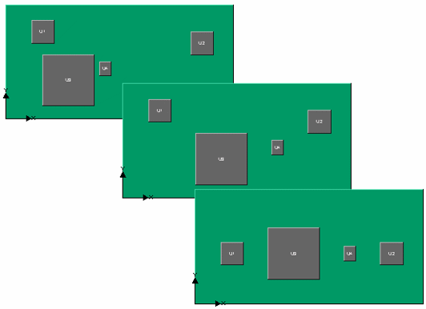

Components can
be repositioned to align with other components or have equal distances
between them.
Restrictions and Limitations
The
selection order is important:
When aligning objects, the
objects align with the first of
the objects selected.
When equispacing objects,
the two most extreme components remain in the same locations,
all components between are repositioned so as to equalize the horizontal
or vertical gap spacing between them.
Procedure
- To align objects:
- Select the objects in either
the data tree or the drawing area (Ctrl+click for multiple selections).
- Click one
of the alignment icons, or choose and
then an Align option.
- Three or more components may be equispaced either
horizontally or vertically. To equispace objects:
- Select the components.
- Click one
of the distribution icons, or choose and
then an Equispace option.
Results
Figure 1 shows the
use of equispacing followed by an aligning about the horizontal
centers.
Figure 1. Equispacing and Aligning Components